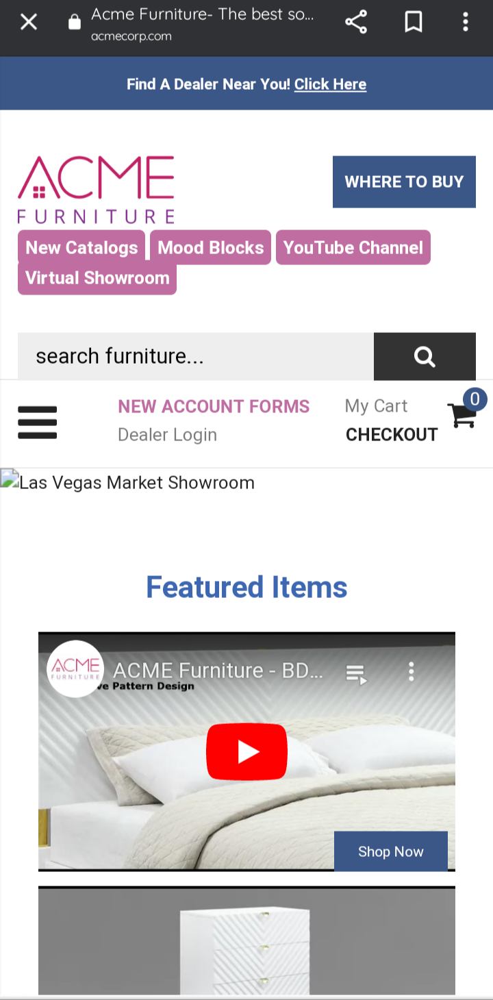

Rule of Thirds
Organization/Company: Acme Corp
Website: www.acmecorp.com
Mobile Screenshot
The Rule of Thirds is viwed by positioning key elements, such as the logo and call-to-action, along grid lines and intersection points. This creates a visually balanced composition that is pleasing to the eye, improving the user experience.
Alignment
Organization/Company: Leroy Merlyn Brazil
Website: www.leroymerlyn.com.br
Mobile Screenshot
The rule of Alignment masters the ability to define an ideal and recommended spacing in your design, the main objective of this principle is to unify and organize the page. But so that all the elements present can have harmony, it is ideal that there is visual communication.
Repetition
Organization/Company: ABC Patterns
Website: www.itau.com.br
Mobile Screenshot
The rule of repetition assumes that in the composition some element needs to be repeated to create identity and unity. This element can be a certain font, a characteristic color, a line style, a shape, etc. The repetition of the blue and orange color in this case is what creates the brand recall.